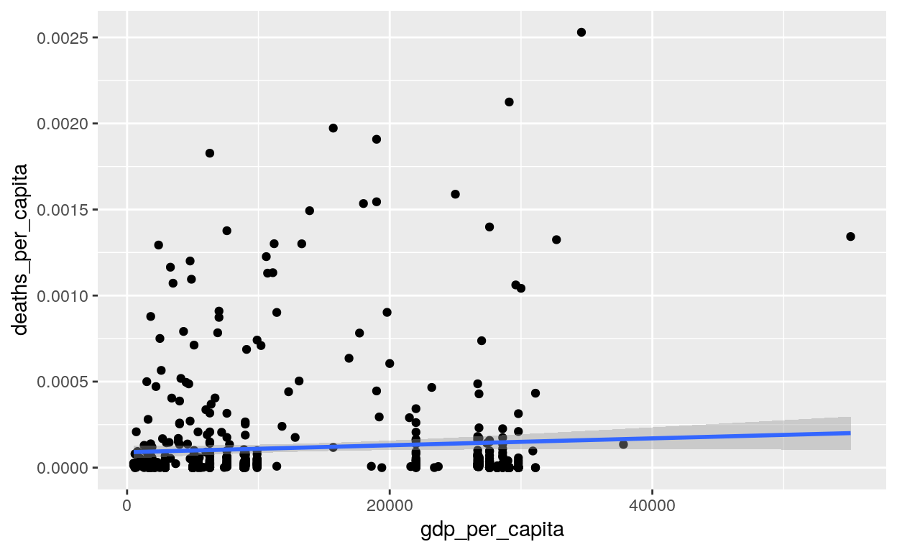

Figure 1: Tidy Data
O que é Tidy Data?
- cada variável uma coluna
- cada observação uma linha
- cada célula uma mensuração única
O pipe %>%
x %>% f(y) vira f(x, y)
x %>% f(y) %>% f(z) vira f(f(x, y), z)
library(magrittr)
# atalho é CTRL + SHIFT + M
c(0:10, NA) %>%
mean(na.rm = TRUE) %>%
print() %>%
message() %>%
message()[1] 5Como ler dados com o {readr}
Vamos começar com o primeiro passo da análise de dados: a importação dos dados.
Para isso o {tidyverse} possui um pacote chamado {readr}.
read_csv(): CSV padrão americanoread_csv2(): CSV padrão europeu/brasileiroread_tsv(): TSVread_delim(): Coringa
Na pasta datasets/ temos diversos datasets interessantes:
adult.csvcountries_of_the_world.csvcovid_19_data.csv: versão 147 de 27/02/2021.
Se vocês quiserem ler arquivos .xlsx ou .xls usem o pacote {readxl}
col_types – O argumento que eu mais uso em read_*()
countries <- read_csv("datasets/countries_of_the_world.csv",
col_types = cols(Population = col_integer(),
`Net migration` = col_double()),
locale = locale(decimal_mark = ","))Manipulação de dados com o {dplyr}

Figure 2: dplyr
Selecionar Variáveis – dplyr::select()
OBS: Tem a função
rename_withdo{dplyr}versão 1.0.
adult %>%
rename_with(~gsub("-", "_", .x))# A tibble: 48,842 × 9
age workclass educa…¹ educa…² marit…³ race gender hours…⁴ income
<int> <fct> <fct> <int> <fct> <fct> <fct> <int> <fct>
1 25 Private 11th 7 Never-… Black Male 40 <=50K
2 38 Private HS-grad 9 Marrie… White Male 50 <=50K
3 28 Local-gov Assoc-… 12 Marrie… White Male 40 >50K
4 44 Private Some-c… 10 Marrie… Black Male 40 >50K
5 18 ? Some-c… 10 Never-… White Female 30 <=50K
6 34 Private 10th 6 Never-… White Male 30 <=50K
7 29 ? HS-grad 9 Never-… Black Male 40 <=50K
8 63 Self-emp… Prof-s… 15 Marrie… White Male 32 >50K
9 24 Private Some-c… 10 Never-… White Female 40 <=50K
10 55 Private 7th-8th 4 Marrie… White Male 10 <=50K
# … with 48,832 more rows, and abbreviated variable names ¹education,
# ²educational_num, ³marital_status, ⁴hours_per_weekadult %>%
rename_with(~gsub("-", "_", .x)) %>%
select(where(is.factor)) %>%
select(-workclass) %>%
rename_all(~paste0("antigo_", .x))# A tibble: 48,842 × 5
antigo_education antigo_marital_status antigo_race antigo…¹ antig…²
<fct> <fct> <fct> <fct> <fct>
1 11th Never-married Black Male <=50K
2 HS-grad Married-civ-spouse White Male <=50K
3 Assoc-acdm Married-civ-spouse White Male >50K
4 Some-college Married-civ-spouse Black Male >50K
5 Some-college Never-married White Female <=50K
6 10th Never-married White Male <=50K
7 HS-grad Never-married Black Male <=50K
8 Prof-school Married-civ-spouse White Male >50K
9 Some-college Never-married White Female <=50K
10 7th-8th Married-civ-spouse White Male <=50K
# … with 48,832 more rows, and abbreviated variable names
# ¹antigo_gender, ²antigo_incomeProfessor eu gosto de camelCase e agora?
Não tema, tem o pacote {janitor}
library(janitor)
adult %>% clean_names(case = "lower_camel")# A tibble: 48,842 × 9
age workclass educa…¹ educa…² marit…³ race gender hours…⁴ income
<int> <fct> <fct> <int> <fct> <fct> <fct> <int> <fct>
1 25 Private 11th 7 Never-… Black Male 40 <=50K
2 38 Private HS-grad 9 Marrie… White Male 50 <=50K
3 28 Local-gov Assoc-… 12 Marrie… White Male 40 >50K
4 44 Private Some-c… 10 Marrie… Black Male 40 >50K
5 18 ? Some-c… 10 Never-… White Female 30 <=50K
6 34 Private 10th 6 Never-… White Male 30 <=50K
7 29 ? HS-grad 9 Never-… Black Male 40 <=50K
8 63 Self-emp… Prof-s… 15 Marrie… White Male 32 >50K
9 24 Private Some-c… 10 Never-… White Female 40 <=50K
10 55 Private 7th-8th 4 Marrie… White Male 10 <=50K
# … with 48,832 more rows, and abbreviated variable names ¹education,
# ²educationalNum, ³maritalStatus, ⁴hoursPerWeekOrdenar variáveis com dplyr::arrange()
# A tibble: 48,842 × 2
age education_num
<int> <int>
1 90 2
2 90 4
3 90 4
4 90 4
5 90 5
6 90 6
7 90 6
8 90 7
9 90 7
10 90 9
# … with 48,832 more rowsFrequencias com dplyr::count()
OBS: vamos ver muito essa função quando falarmos de
group_by()
# A tibble: 142 × 3
age income n
<int> <fct> <int>
1 23 <=50K 1307
2 24 <=50K 1162
3 22 <=50K 1161
4 25 <=50K 1119
5 27 <=50K 1117
6 20 <=50K 1112
7 28 <=50K 1101
8 21 <=50K 1090
9 26 <=50K 1068
10 19 <=50K 1050
# … with 132 more rowsManipular Variáveis – dplyr::mutate()
Odeio potência de 10
use options(scipen = 999, digits = 2)
options(scipen = 999, digits = 2)
countries <- countries %>% clean_names()
countries %>%
mutate(
log_pop = log(population),
area_sq_km = area_sq_mi * 2.5899985,
pop_density_per_sq_km = population / area_sq_km)# A tibble: 227 × 23
country region popul…¹ area_…² pop_d…³ coast…⁴ net_m…⁵ infan…⁶
<chr> <chr> <int> <dbl> <dbl> <dbl> <dbl> <dbl>
1 Afghanistan ASIA … 3.11e7 647500 48 0 23.1 163.
2 Albania EASTE… 3.58e6 28748 125. 1.26 -4.93 21.5
3 Algeria NORTH… 3.29e7 2381740 13.8 0.04 -0.39 31
4 American Sa… OCEAN… 5.78e4 199 290. 58.3 -20.7 9.27
5 Andorra WESTE… 7.12e4 468 152. 0 6.6 4.05
6 Angola SUB-S… 1.21e7 1246700 9.7 0.13 0 191.
7 Anguilla LATIN… 1.35e4 102 132. 59.8 10.8 21.0
8 Antigua & B… LATIN… 6.91e4 443 156 34.5 -6.15 19.5
9 Argentina LATIN… 3.99e7 2766890 14.4 0.18 0.61 15.2
10 Armenia C.W. … 2.98e6 29800 99.9 0 -6.47 23.3
# … with 217 more rows, 15 more variables: gdp_per_capita <dbl>,
# literacy_percent <dbl>, phones_per_1000 <dbl>,
# arable_percent <dbl>, crops_percent <dbl>, other_percent <dbl>,
# climate <dbl>, birthrate <dbl>, deathrate <dbl>,
# agriculture <dbl>, industry <dbl>, service <dbl>, log_pop <dbl>,
# area_sq_km <dbl>, pop_density_per_sq_km <dbl>, and abbreviated
# variable names ¹population, ²area_sq_mi, …O mutate ele altera variáveis in-place ou adiciona novas variáveis preservando as existentes. Mas temos também o transmute adiciona novas variáveis e dropa todas as demais.
countries %>%
transmute(
log_pop = log(population),
area_sq_km = area_sq_mi * 2.5899985,
pop_density_per_sq_km = population / area_sq_km)# A tibble: 227 × 3
log_pop area_sq_km pop_density_per_sq_km
<dbl> <dbl> <dbl>
1 17.3 1677024. 18.5
2 15.1 74457. 48.1
3 17.3 6168703. 5.34
4 11.0 515. 112.
5 11.2 1212. 58.7
6 16.3 3228951. 3.76
7 9.51 264. 51.0
8 11.1 1147. 60.2
9 17.5 7166241. 5.57
10 14.9 77182. 38.6
# … with 217 more rowsQuase todos os verbos (como vocês viram lá em cima) do {dplyr} tem os sufixos _if, _all e _at. Por exemplo:
# A tibble: 236,017 × 7
ObservationDate Province/S…¹ Count…² Last …³ Confi…⁴ Deaths Recov…⁵
<date> <fct> <fct> <fct> <dbl> <dbl> <dbl>
1 2020-01-22 Anhui Mainla… 1/22/2… 1 0 0
2 2020-01-22 Beijing Mainla… 1/22/2… 14 0 0
3 2020-01-22 Chongqing Mainla… 1/22/2… 6 0 0
4 2020-01-22 Fujian Mainla… 1/22/2… 1 0 0
5 2020-01-22 Gansu Mainla… 1/22/2… 0 0 0
6 2020-01-22 Guangdong Mainla… 1/22/2… 26 0 0
7 2020-01-22 Guangxi Mainla… 1/22/2… 2 0 0
8 2020-01-22 Guizhou Mainla… 1/22/2… 1 0 0
9 2020-01-22 Hainan Mainla… 1/22/2… 4 0 0
10 2020-01-22 Hebei Mainla… 1/22/2… 1 0 0
# … with 236,007 more rows, and abbreviated variable names
# ¹`Province/State`, ²`Country/Region`, ³`Last Update`, ⁴Confirmed,
# ⁵Recovereddplyr::if_else e dplyr::case_when
Usamos o if_else quando queremos fazer um teste booleano e gerar um valor caso o teste seja verdadeiro e outro valor caso o teste seja falso. Basicamente um if ... else ...:
adult_clean %>%
mutate(
race_black = if_else(race == "Black", 1L, 0L)
) %>%
select(starts_with("race"))# A tibble: 48,842 × 2
race race_black
<fct> <int>
1 Black 1
2 White 0
3 White 0
4 Black 1
5 White 0
6 White 0
7 Black 1
8 White 0
9 White 0
10 White 0
# … with 48,832 more rowsTemos algo um pouco mais flexível, poderoso; porém verboso. Esse é o dplyr::case_when:
adult_cat <- adult_clean %>%
mutate(
marital_status_cat = case_when(
marital_status == "Never-married" ~ 1L,
marital_status == "Married-civ-spouse" ~ 2L,
marital_status == "Married-spouse-absent" ~ 3L,
marital_status == "Married-AF-spouse " ~ 4L,
marital_status == "Separated" ~ 5L,
marital_status == "Divorced" ~ 6L,
marital_status == "Widowed" ~ 7L,
TRUE ~ NA_integer_
),
marital_age_group = case_when(
marital_status_cat == 1 & age >=30 ~ "solteirx_convictx",
marital_status_cat == 1 & age <=30 ~ "solteirx_jovem",
marital_status_cat > 1 & marital_status_cat <= 4 & age >=30 ~ "adultos_casados",
marital_status_cat > 1 & marital_status_cat <= 4 & age <=30 ~ "jovens_casados",
TRUE ~ "divorciados, separados etc"
)
)
adult_cat %>%
select(starts_with("marital")) %>%
count(marital_age_group, sort = TRUE)# A tibble: 5 × 2
marital_age_group n
<chr> <int>
1 adultos_casados 20195
2 solteirx_jovem 10798
3 divorciados, separados etc 9718
4 solteirx_convictx 5319
5 jovens_casados 2812Agrupar e Sumarizar Variáveis – dplyr::group_by() e dplyr::summarise()
Agrupamos dados com o dplyr::group_by() e depois usamos o dplyr::summarise() (também existe na versão inglês americano como dplyr::summarize()`) para computar valores dos grupos. Este tipo de análise é chamada comumente de split-apply-combine.
adult_cat %>%
group_by(marital_age_group) %>%
summarise(
n = n(),
n_prop = n / nrow(.)) %>%
arrange(-n)# A tibble: 5 × 3
marital_age_group n n_prop
<chr> <int> <dbl>
1 adultos_casados 20195 0.413
2 solteirx_jovem 10798 0.221
3 divorciados, separados etc 9718 0.199
4 solteirx_convictx 5319 0.109
5 jovens_casados 2812 0.0576covid %>%
janitor::clean_names() %>%
group_by(country_region) %>%
summarise(
n = n(),
media_confirmados = mean(confirmed),
mediana_confirmados = median(confirmed),
media_mortos = mean(deaths),
mediana_mortos = median(deaths)
) %>%
arrange(-mediana_mortos)# A tibble: 226 × 6
country_region n media_confirmados mediana_co…¹ media…² media…³
<chr> <int> <dbl> <dbl> <dbl> <dbl>
1 Iran 375 533357. 361150 25526. 20776
2 South Africa 360 564541. 627650 14975. 14206
3 Argentina 362 713468. 413080. 18151. 8558.
4 Indonesia 363 334202. 172053 10592. 7343
5 Iraq 371 272190. 215784 6416. 6668
6 Ecuador 364 116916. 111680 8028. 6546
7 Turkey 354 717519. 275749 9999. 6538.
8 Bolivia 354 98196. 119180. 5184. 5316.
9 Egypt 380 80259. 97192. 4399. 5237
10 Bangladesh 357 279329. 317528 4023. 4351
# … with 216 more rows, and abbreviated variable names
# ¹mediana_confirmados, ²media_mortos, ³mediana_mortosEu posso agrupar por vários grupos por exemplo:
library(tidyr)
covid %>%
janitor::clean_names() %>%
group_by(country_region, province_state) %>%
drop_na() %>%
count(wt = deaths, sort = TRUE)# A tibble: 760 × 3
# Groups: country_region, province_state
# [760]
country_region province_state n
<chr> <chr> <dbl>
1 UK England 13897698
2 US New York 10888511
3 Brazil Sao Paulo 9651617
4 India Maharashtra 9117030
5 Italy Lombardia 5743485
6 US California 5358608
7 Brazil Rio de Janeiro 5335936
8 US Texas 5072817
9 US New Jersey 5054435
10 US Florida 4153905
# … with 750 more rowsLembra que todos os verbos do {dplyr} tem o sufixo _all, _if e _at?
covid %>%
summarise_if(is.numeric, median)# A tibble: 1 × 3
Confirmed Deaths Recovered
<dbl> <dbl> <dbl>
1 6695 127 1224Não sei o futuro das coisas _if, _at e _all, pois o lifecycle está em superseded. Então se vocês quiserem um código robusto ao tempo usem o across:
# A tibble: 1 × 3
Confirmed Deaths Recovered
<dbl> <dbl> <dbl>
1 6695 127 1224Qual a diferença de
grouped_dfetibble?
Se você estiver no mundo do {tidyverse} nenhuma, mas se você for dar um pipe %>% de um grouped_df em algo que não é do {tidyverse} e que somente aceita tibbles e data.frames você vai receber um erro. Nesses casos antes de “pipar” %>% você faz um ungroup():
[1] "grouped_df" "tbl_df" "tbl" "data.frame"[1] "tbl_df" "tbl" "data.frame"covid <- covid %>% janitor::clean_names()
countries <- countries %>% janitor::clean_names()Joins com dplyr::join*
Vamos para a cereja do bolo que é os famosos joins. {dplyr} tem os seguintes joins:
inner_join(): inclui todas as observações de x e y.left_join(): inclui todas as observações de x.right_join(): inclui todas as observações de y.full_join(): inclui todas as observações de x ou y.
OBS: participação especial do
{stringr}
library(stringr)
# antes de fazer o join vamos ver se vai dar certo
227 - sum(countries$country %in% covid$country_region)[1] 42covid %>%
count(country_region, wt = confirmed, sort = TRUE) %>%
filter(str_detect(country_region, "China"))# A tibble: 1 × 2
country_region n
<chr> <dbl>
1 Mainland China 32591323countries %>%
filter(str_detect(country, "China"))# A tibble: 1 × 20
country region popul…¹ area_…² pop_d…³ coast…⁴ net_m…⁵ infan…⁶
<chr> <chr> <int> <dbl> <dbl> <dbl> <dbl> <dbl>
1 China ASIA (EX. N… 1.31e9 9596960 137. 0.15 -0.4 24.2
# … with 12 more variables: gdp_per_capita <dbl>,
# literacy_percent <dbl>, phones_per_1000 <dbl>,
# arable_percent <dbl>, crops_percent <dbl>, other_percent <dbl>,
# climate <dbl>, birthrate <dbl>, deathrate <dbl>,
# agriculture <dbl>, industry <dbl>, service <dbl>, and abbreviated
# variable names ¹population, ²area_sq_mi, ³pop_density_per_sq_mi,
# ⁴coastline_coast_area_ratio, ⁵net_migration, …library(ggplot2)
covid %>%
mutate(
country_region = str_replace(country_region, "Mainland China", "China")
) %>%
filter(observation_date == max(observation_date)) %>%
right_join(countries,
by = c("country_region" = "country")) %>%
mutate(deaths_per_capita = deaths / population) %>%
ggplot(aes(x = gdp_per_capita, y = deaths_per_capita)) +
geom_point() +
geom_smooth(method = lm)
Mais transformações para formato Tidy Data com {tidyr}
O tidyr tem o famoso drop_na(). Então se vocês forem usar o drop_na() junto com o dplyr não esqueçam do library(tidyr).
OBS: vocês podem importar TODO o
{tidyverse}de uma vez só com olibrary(tidyverse)
Em especial temos as funções pivot_longer() e pivot_wider():
- Dataset
tidyr::relig_income - Dataset
tidyr::billboard - Dataset
tidyr::fish_encounters
library(tidyr)
relig_income %>%
pivot_longer(!religion,
names_to = "income",
values_to = "count") %>%
mutate(across(where(is.character), as.factor)) %>%
filter(!str_detect(income, "Don't know")) %>%
count(religion, income, wt = count, sort = TRUE)# A tibble: 162 × 3
religion income n
<fct> <fct> <dbl>
1 Evangelical Prot $50-75k 1486
2 Catholic $50-75k 1116
3 Mainline Prot $50-75k 1107
4 Evangelical Prot $20-30k 1064
5 Evangelical Prot $30-40k 982
6 Catholic $75-100k 949
7 Evangelical Prot $75-100k 949
8 Mainline Prot $75-100k 939
9 Evangelical Prot $40-50k 881
10 Evangelical Prot $10-20k 869
# … with 152 more rowsbillboard %>%
pivot_longer(
cols = starts_with("wk"),
names_to = "week",
values_to = "rank",
values_drop_na = TRUE
) %>%
group_by(artist) %>%
summarise(
n = n(),
median_rank = median(rank)) %>%
arrange(-n, median_rank)# A tibble: 228 × 3
artist n median_rank
<chr> <int> <dbl>
1 Creed 104 28.5
2 Lonestar 95 38
3 Destiny's Child 92 13
4 N'Sync 74 12
5 Sisqo 74 25.5
6 3 Doors Down 73 42
7 Jay-Z 73 45
8 Aguilera, Christina 67 17
9 Hill, Faith 67 28
10 Houston, Whitney 67 54
# … with 218 more rowsfish_encounters %>%
pivot_wider(
names_from = station,
values_from = seen,
values_fill = 0
) %>%
pivot_longer(!fish, names_to = "station", values_to = "seen")# A tibble: 209 × 3
fish station seen
<fct> <chr> <int>
1 4842 Release 1
2 4842 I80_1 1
3 4842 Lisbon 1
4 4842 Rstr 1
5 4842 Base_TD 1
6 4842 BCE 1
7 4842 BCW 1
8 4842 BCE2 1
9 4842 BCW2 1
10 4842 MAE 1
# … with 199 more rowsAlém do unnest_wider() e unnest_longer():
- Dataset
repurrrsive::got_chars
library(repurrrsive)
chars <- tibble(char = got_chars)
chars %>%
unnest_wider(char) %>%
select(name, books, tvSeries) %>%
pivot_longer(!name, names_to = "media") %>%
unnest_longer(value) %>%
filter(media == "tvSeries") %>%
extract(value, "season", "(\\d{1})", convert = TRUE)# A tibble: 102 × 3
name media season
<chr> <chr> <int>
1 Theon Greyjoy tvSeries 1
2 Theon Greyjoy tvSeries 2
3 Theon Greyjoy tvSeries 3
4 Theon Greyjoy tvSeries 4
5 Theon Greyjoy tvSeries 5
6 Theon Greyjoy tvSeries 6
7 Tyrion Lannister tvSeries 1
8 Tyrion Lannister tvSeries 2
9 Tyrion Lannister tvSeries 3
10 Tyrion Lannister tvSeries 4
# … with 92 more rowsUma outra maneira
chars %>%
unnest_wider(char) %>%
select(name, books, tvSeries) %>%
pivot_longer(!name, names_to = "media") %>%
unnest_longer(value) %>%
filter(media == "tvSeries") %>%
separate(value, into = c(NA, "season"), sep = " ", fill = "right")# A tibble: 102 × 3
name media season
<chr> <chr> <chr>
1 Theon Greyjoy tvSeries 1
2 Theon Greyjoy tvSeries 2
3 Theon Greyjoy tvSeries 3
4 Theon Greyjoy tvSeries 4
5 Theon Greyjoy tvSeries 5
6 Theon Greyjoy tvSeries 6
7 Tyrion Lannister tvSeries 1
8 Tyrion Lannister tvSeries 2
9 Tyrion Lannister tvSeries 3
10 Tyrion Lannister tvSeries 4
# … with 92 more rowsExtras
Converter verbos {dplyr} em SQL com o {dbplyr}
Posso muito bem converter verbos {dplyr} para SQL (para todos os amantes de SQL)
summary <- mtcars2 %>%
group_by(cyl) %>%
summarise(mpg = mean(mpg, na.rm = TRUE)) %>%
arrange(-mpg)
summary %>% show_query()<SQL>
SELECT `cyl`, AVG(`mpg`) AS `mpg`
FROM `mtcars`
GROUP BY `cyl`
ORDER BY -`mpg`# A tibble: 3 × 2
cyl mpg
<dbl> <dbl>
1 4 26.7
2 6 19.7
3 8 15.1Big Data com {arrow}
Ambiente
R version 4.2.2 (2022-10-31)
Platform: x86_64-pc-linux-gnu (64-bit)
Running under: Ubuntu 22.04.1 LTS
Matrix products: default
BLAS: /usr/lib/x86_64-linux-gnu/openblas-pthread/libblas.so.3
LAPACK: /usr/lib/x86_64-linux-gnu/openblas-pthread/libopenblasp-r0.3.20.so
locale:
[1] LC_CTYPE=en_US.UTF-8 LC_NUMERIC=C
[3] LC_TIME=en_US.UTF-8 LC_COLLATE=en_US.UTF-8
[5] LC_MONETARY=en_US.UTF-8 LC_MESSAGES=en_US.UTF-8
[7] LC_PAPER=en_US.UTF-8 LC_NAME=C
[9] LC_ADDRESS=C LC_TELEPHONE=C
[11] LC_MEASUREMENT=en_US.UTF-8 LC_IDENTIFICATION=C
attached base packages:
[1] stats graphics grDevices utils datasets methods
[7] base
other attached packages:
[1] repurrrsive_1.1.0 ggplot2_3.4.1 stringr_1.5.0
[4] tidyr_1.3.0 janitor_2.2.0 dplyr_1.1.0
[7] readr_2.1.4 magrittr_2.0.3 tibble_3.1.8
loaded via a namespace (and not attached):
[1] lubridate_1.9.2 lattice_0.20-45 png_0.1-8
[4] assertthat_0.2.1 rprojroot_2.0.3 digest_0.6.31
[7] utf8_1.2.3 R6_2.5.1 RSQLite_2.3.0
[10] evaluate_0.20 highr_0.10 pillar_1.8.1
[13] rlang_1.0.6 rstudioapi_0.14 blob_1.2.3
[16] jquerylib_0.1.4 Matrix_1.5-1 rmarkdown_2.20
[19] labeling_0.4.2 splines_4.2.2 bit_4.0.5
[22] munsell_0.5.0 compiler_4.2.2 xfun_0.37
[25] pkgconfig_2.0.3 mgcv_1.8-41 htmltools_0.5.4
[28] downlit_0.4.2 tidyselect_1.2.0 bookdown_0.32
[31] fansi_1.0.4 dbplyr_2.3.0 crayon_1.5.2
[34] tzdb_0.3.0 withr_2.5.0 grid_4.2.2
[37] nlme_3.1-160 jsonlite_1.8.4 gtable_0.3.1
[40] lifecycle_1.0.3 DBI_1.1.3 scales_1.2.1
[43] cli_3.6.0 stringi_1.7.12 vroom_1.6.1
[46] cachem_1.0.6 farver_2.1.1 snakecase_0.11.0
[49] bslib_0.4.2 ellipsis_0.3.2 generics_0.1.3
[52] vctrs_0.5.2 distill_1.5 tools_4.2.2
[55] bit64_4.0.5 glue_1.6.2 purrr_1.0.1
[58] hms_1.1.2 parallel_4.2.2 fastmap_1.1.0
[61] yaml_2.3.7 timechange_0.2.0 colorspace_2.1-0
[64] memoise_2.0.1 knitr_1.42 sass_0.4.5